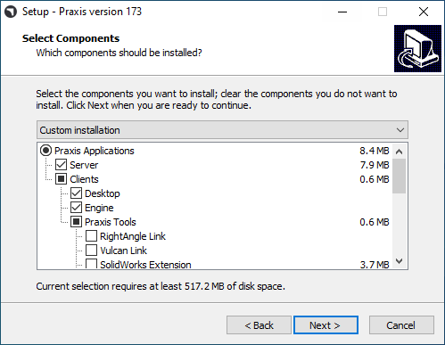
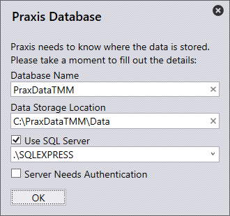
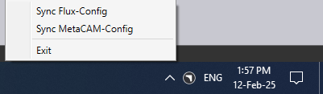

การติดตั้ง Server
ปฏิบัติตามคำแนะนำในการติดตั้ง TruSmartCAM Server พร้อมกับ SQL
|
สิทธิ์ผู้ดูแลระบบ
เพื่อดำเนินการติดตั้งนี้ ผู้ใช้ต้องมีสิทธิ์ผู้ดูแลระบบ |
-
รัน Setup.TruSmartCAM.<version>.exe เพื่อเริ่มการติดตั้ง
| Version เป็นตัวเลข |
-
อ่านข้อตกลงใบอนุญาตและเลือก I accept the agreement จากนั้นคลิก ถัดไป

ขั้นตอนที่ 1 : ตำแหน่งการติดตั้ง
-
ระบุไดเรกทอรีการติดตั้งหรือยอมรับค่าเริ่มต้น
C:\Program Files\Metamation\Praxisและคลิก ถัดไป-
C:\Program Files\Metamation\Praxis- โฟลเดอร์การติดตั้งจะมี โฟลเดอร์ดังนี้ : Bin, MetaCAM, Samples และ Tracker -
C:\Program Data\Metamation- โฟลเดอร์ข้อมูลจะมี โฟลเดอร์ดังนี้ : TruSmartCAM, TecZone และ MetaCAM
-

ขั้นตอนที่ 2 : การเลือกคอมโพเนนต์
| ประเภทการติดตั้ง | คอมโพเนนต์ |
|---|---|
Full |
Server + Desktop client + Engine |
Client |
Desktop Client |
Server |
Server + Desktop client |
Station |
เลือก Stations Terminal ทั้งหมด เช่น TecZone, MetaCAM, RightAngle(Bend Controller), Vulcan(Laser Machine Controller) |
Custom |
เลือกตามความต้องการของผู้ใช้ |
-
เลือก Full Installation เลือก Code Senders และ Bend Code Senders จาก TruSmartCAM Tools ตอนนี้ประเภทการติดตั้งจะเปลี่ยนเป็น กำหนดเอง คลิก ถัดไป

ขั้นตอนที่ 3 : เลือกติดตั้ง SQL Server
|
การติดตั้ง SQL Express 2022 จำเป็นเฉพาะสำหรับ TruSmartCAM Server เท่านั้น ตัวเลือกนี้ไม่พร้อมใช้งานสำหรับการติดตั้ง Client และ Sync นอกจากนี้จะ เลือกและติดตั้งในครั้งแรก และสามารถละเว้นได้หลังจากนั้น หาก มี SQL ติดตั้งอยู่ใน TruSmartCAM server แล้ว ผู้ใช้สามารถข้ามขั้นตอนที่ 3 |
-
ใน Select Additional Tasks : คลิก Install SQL Express และคลิก ถัดไป
-
ใน Ready to Install : สรุปคุณสมบัติการติดตั้งทั้งหมดและคลิก Install

ขั้นตอนที่ 4 : การติดตั้ง SQL Server
เมื่อคอมโพเนนต์ TruSmartCAM ถูกติดตั้ง ตัวติดตั้งจะดำเนินการติดตั้ง SQL server ยอมรับข้อตกลงใบอนุญาตเพื่อดำเนินการต่อและติดตั้ง SQL express ด้วยตัวเลือกเริ่มต้น

เมื่อการติดตั้งเสร็จสมบูรณ์ คลิก Close และทำการติดตั้งให้เสร็จสมบูรณ์

| ขึ้นอยู่กับเวอร์ชัน Windows การปิดการติดตั้ง SQL อาจแจ้งให้ รีสตาร์ท |
ขั้นตอนที่ 5 : ทางลัด Windows Desktop
-
หลังจากติดตั้ง SQL หากระบบไม่รีสตาร์ท ให้เลือกช่องทำเครื่องหมาย Launch TruSmartCAM และคลิก Finish
-
หากระบบรีสตาร์ท ให้เปิดไอคอนทางลัด TruSmartCAM บน Desktop หรือพิมพ์ TruSmartCAM ใน Windows Start Program และ Run as administrator
| การติดตั้ง Server : ไอคอนทางลัด TruSmartCAM และ TruSmartCAM License มี บน Desktop + การติดตั้ง Client/SYNC : มีเฉพาะไอคอนทางลัด TruSmartCAM บน Desktop |

ขั้นตอนที่ 6 : การลงทะเบียนใบอนุญาต
-
ในฟิลด์ Serial Number พิมพ์ TruSmartCAM Serial key ที่ Trumpf Metamation Service Team จัดหาให้ พิมพ์ <ชื่อบริษัท> ในฟิลด์ "Registered to" และ E-Mail คลิก OK

|
ในกรณีที่ Network firewall บลอกการลงทะเบียนใบอนุญาตหรือไม่มีอินเทอร์เน็ตใน TruSmartCAM Server PC ใบอนุญาต TruSmartCAM จะทำโดยการเปิดใช้งานแบบออฟไลน์ ส่งอีเมล Prax.request จากโฟลเดอร์ C:\ProgramData\Metamation\Praxis ไปยัง Trumpf Metamation Service Team Trumpf Metamation Team จะจัดหา Prax.lock ซึ่งต้องนำไปวางในโฟลเดอร์นี้ |
ขั้นตอนที่ 7 : การกำหนดค่าเริ่มต้นครั้งแรก
-
พิมพ์ชื่อ Database และตั้งค่าตำแหน่งจัดเก็บข้อมูล เลือก ช่องทำเครื่องหมาย ใช้ SQL Server และเลือกชื่อ SQL server เพื่อเชื่อมต่อกับ Database คลิก OK

-
TruSmartCAM Desktop Client เปิดขึ้นแสดง Database Connection Succeeded ที่ ด้านล่าง
-
ไฟล์การกำหนดค่า TruSmartCAM, TecZone และ MetaCAM ถูกสร้างขึ้นด้วยเครื่องจักร กำหนดค่าเริ่มต้นหรือตามใบอนุญาตเครื่องจักร TruSmartCAM การกำหนดค่าเดียวกันนี้จะถูกแชร์ ในทุก TruSmartCAM Clients

หน้าจอต้อนรับแสดงด้วย Windows User LoginName เป็น TruSmartCAM Login และ Name TruSmartCAM User แรกจะถือเป็น ผู้ดูแลไซต์ ระบุ Email และ Password คลิก ตกลง
เลือกช่องทำเครื่องหมาย จดจำฉัน เพื่อบันทึกข้อมูลประจำตัวการเข้าสู่ระบบสำหรับครั้งถัดไป ล้างช่องทำเครื่องหมาย จดจำฉัน จะแจ้งให้ใส่ข้อมูลการเข้าสู่ระบบและ กล่องโต้ตอบรหัสผ่านทุกครั้งที่เปิดแอปพลิเคชัน TruSmartCAM

ขั้นตอนที่ 8 : การเข้าสู่ระบบ TruSmartCAM
-
ปิด TruSmartCAM และเปิดอีกครั้ง ระบบจะแจ้งให้คุณใส่ ข้อมูลประจำตัวการเข้าสู่ระบบ TruSmartCAM

-
ชื่อผู้ใช้ที่เข้าสู่ระบบจะแสดงถัดจากไอคอนผู้ใช้ใน ส่วนหัวแอปพลิเคชัน TruSmartCAM

-
เมื่อคุณเลื่อนเมาส์ไปเหนือไอคอนผู้ใช้ ระบบจะแสดง:

-
บทบาทผู้ใช้ (เช่น: Programmer, Admin)
-
ทางลัดในการออกจากระบบ: Ctrl+L
-
-
การคลิกไอคอนผู้ใช้จะเปิดเมนูที่ให้คุณ:

-
แก้ไขข้อมูล… - อัปเดตรายละเอียดโปรไฟล์ของคุณ
-
เปลี่ยนรหัสผ่าน… - เปลี่ยนรหัสผ่านบัญชีของคุณ
-
ออกจากระบบ - ออกจากระบบแอปพลิเคชัน
-
ยกเลิก - ปิดเมนูโดยไม่ทำการเปลี่ยนแปลงใดๆ
-
ขั้นตอนที่ 9 : การกำหนดค่าเครื่องจักรโรงงาน
-
TruSmartCAM License [ใบอนุญาตเครื่องจักรทั้งหมดเปิดใช้งาน bit] : TruSmartCAM Machine และ Material เริ่มต้นจะถือเป็นการกำหนดค่าโรงงาน
-
TruSmartCAM License [ไม่มี demo และ bit เครื่องจักรบางตัวเปิดใช้งาน] : เครื่องจักรบางตัวนั้นและ Material เริ่มต้นจะถือเป็นการกำหนดค่าโรงงาน
-
(Open → Import) Part ใหม่จาก
C:\Program Files\Metamation\Praxis\Samples\Partsและตรวจสอบว่า Part ถูกนำเข้า สำเร็จ

หมายเหตุที่ 1 : TruSmartCAM Monitor
-
TruSmartCAM Monitor พร้อมการติดตั้ง Engine (สิทธิ์ Site admin):
-
TruSmartCAM Monitor พร้อม Engine พร้อมกับสิทธิ์ Site Admin TruSmartCAM จะมี ตัวเลือกต่อไปนี้:
-
Push การกำหนดค่า TruSmartCAM, การกำหนดค่า TecZone, MetaCAM ในทุก TruSmartCAM Clients นอกจากนี้มีสิทธิ์ในการสร้าง TruSmartCAM User Login ใหม่
-
Show Agents จะแสดง engine ทั้งหมดที่มีเพื่อทำงานอัตโนมัติ ซึ่งตรงกับใบอนุญาต TruSmartCAM
-
-

-
TruSmartCAM Monitor โดยไม่มีการติดตั้ง Engine (สิทธิ์ Site admin):

-
TruSmartCAM Monitor โดยไม่มีการติดตั้ง Engine (สิทธิ์ผู้ใช้ที่ไม่ใช่ Site Admin):

|
PC ที่รันแอปพลิเคชัน TruSmartCAM ต้องติดตั้งคอมโพเนนต์ Engine TruSmartCAM [Server PC หรือในการติดตั้ง Client ใดๆ] PC ที่ติดตั้งคอมโพเนนต์ Engine TruSmartCAM ควรรันตลอด 24x7 เพื่อทำงานอัตโนมัติทั้งหมด |
หมายเหตุที่ 2 : Lock Tracker
-
คลิกทางลัด TruSmartCAM License ที่มีใน TruSmartCAM Server Desktop หรือเปิด http://localhost:7171/metamation/locktrack url ในเว็บเบราว์เซอร์ใดๆ
สิ่งนี้จะเปิดโมดูล Lock Tracker ซึ่งมีข้อมูลใบอนุญาต, TruSmartCAM ข้อมูลเซสชันปัจจุบันและ Log
หน้า LockTracker HOME : แสดง TruSmartCAM Serial Number, Serial Expiry information และข้อมูล Serial bits ที่มี

หน้า LockTracker SESSIONS : ข้อมูลการเชื่อมต่อ TruSmartCAM Server ปัจจุบันเช่น TruSmartCAM Desktop client PC, PMonitor, PEngine Status

หน้า LockTracker LOGs : TruSmartCAM client start และ log off | Pmonitor start และ PEngine connect/disconnect status เป็นต้น สามารถดูได้ในหน้า Logs นี้

หมายเหตุที่ 3 : OpenGL
-
แอปพลิเคชัน TruSmartCAM ขณะเปิดจะปิดทันทีและ pmonitor ไม่แสดงที่ task bar
-
นี่แสดงถึงปัญหา OpenGl
-
อีกวิธีหนึ่งในการยืนยันนี้: เปิด C:\Program Files\Metamation\Praxis\Bin\Flux.exe ซึ่งจะแสดงกล่องโต้ตอบข้อผิดพลาดเกี่ยวกับ ปัญหา OpenGL

-
อัปเดต C:\ProgramData\Metamation\Praxis\Prax.ini, ส่วน options ด้วย GLVersion=1 ทำให้แอปพลิเคชัน TruSmartCAM เปิดสำเร็จ
[Options]
GLVersion=1.0